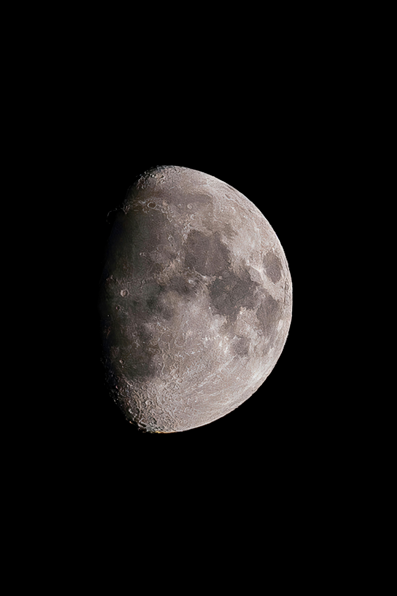
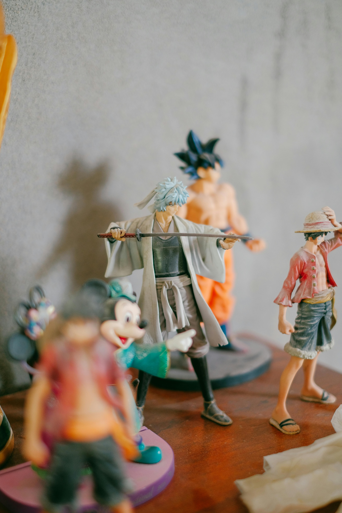
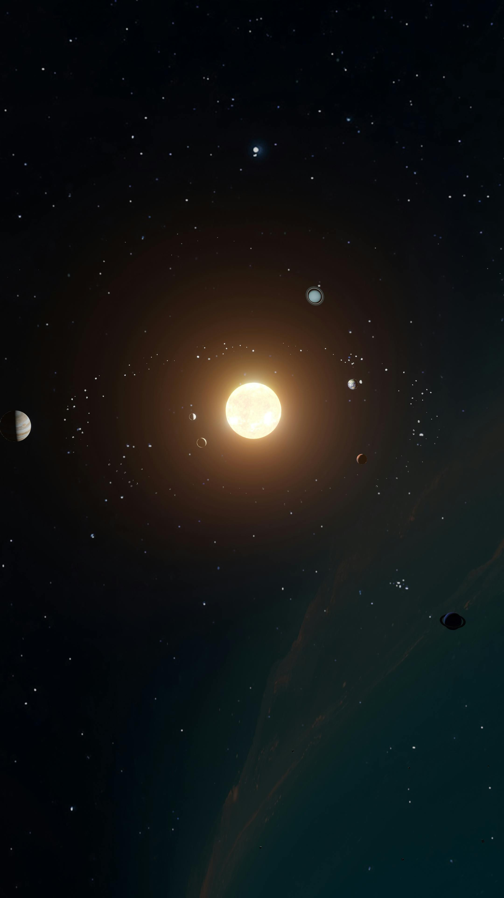

Ciência, Astronomia, Animes e Descobertas do Laboratório
Ciência, Astronomia e Tecnologia
Gostou? Copie o link e abra no Google:
https://go.hotmart.com/E97232258I✅ Compra Segura via Hotmart
Você sabia que existe uma explicação psicológica para as pessoas que não se conectam com a paixão nacional? Enquanto muitos focam no campo, outros focam em diferentes áreas da ciência e do conhecimento. Confira essa análise interessante sobre o comportamento dos brasileiros:
Créditos: Canal Psicologia Descomplicada Oficial

A Lua está se afastando da Terra cerca de 3,8 cm por ano! No passado, ela estava tão perto que os dias duravam apenas 6 horas. Imagine só como seria o céu naquela época!
Ler artigo completo →
Mais do que poderes, os heróis nos ensinam a nunca desistir. Seja a persistência do Naruto ou a vontade do Goku, essas histórias nos mostram que a verdadeira força vem de enfrentar os nossos próprios limites!
Ver curiosidades →Você sabia que o asfalto é um líquido extremamente viscoso? Entenda como a densidade e o pH influenciam na qualidade das estradas e construções que vemos todos os dias.
Bastidores do Lab →
Saturno é tão imenso que caberiam 760 Terras dentro dele. Mas aqui está o segredo: ele é composto quase totalmente de gás. Se você encontrasse uma banheira gigante o suficiente para colocá-lo dentro, Saturno flutuaria como um patinho de borracha!
Explorar planetas →